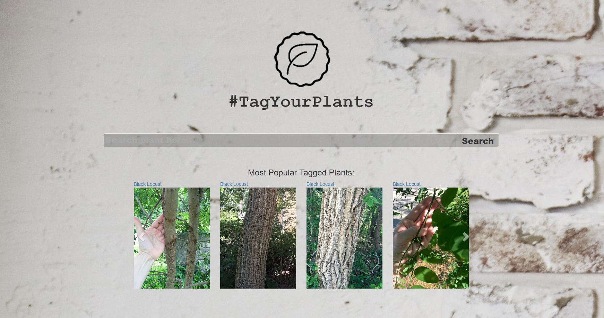

The project Shannon has done:
TagYourPlants
A Picture browser search engine Web App powered by Django MVC framework and Python:
- A web application that provides word-based search functionality on mined plant pictures and hashtag data from two social media platforms: Twitter and Flickr.
- Built a plant database from scratch, which is processed through relevance scoring filter system and regular expression based rule in Python.